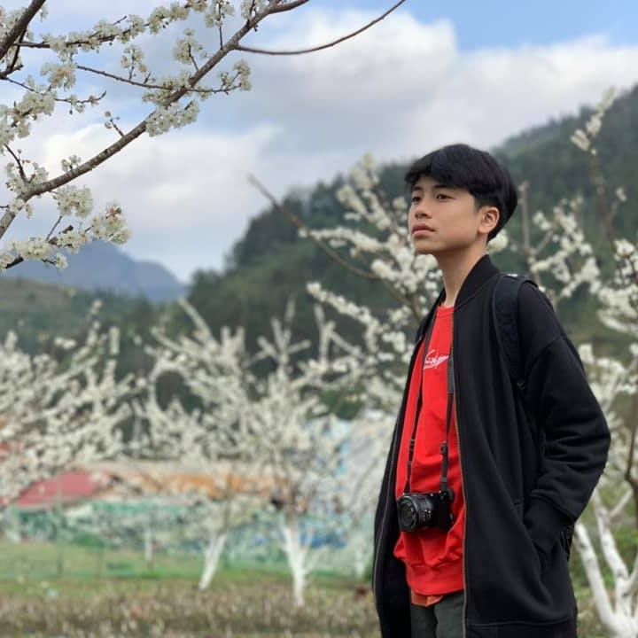
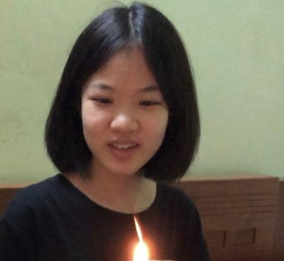
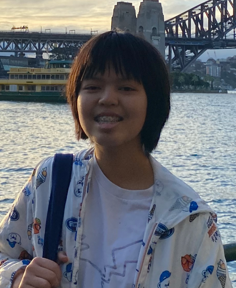
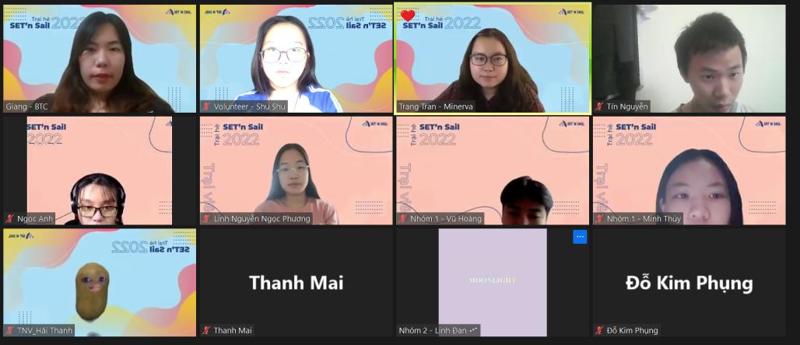
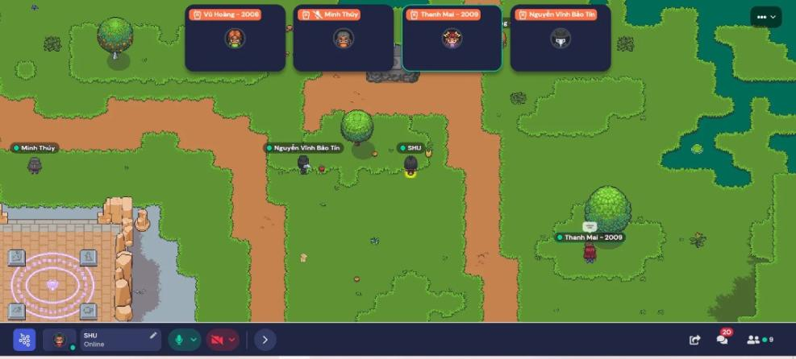
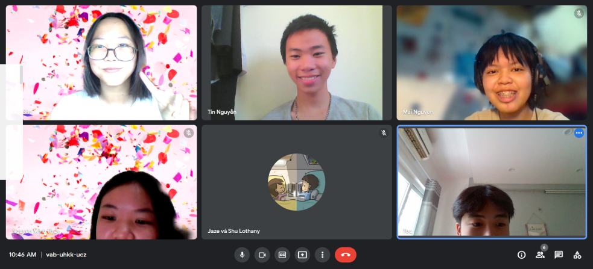

Your browser doesn't support the features required by impress.js, so you are presented with a simplified version of this presentation.
For the best experience please use the latest Chrome, Safari or Firefox browser.
Hi! This is YEARBOOK #01, a collection of our memories and experiences from our time at Summercamp Set'n Sail, 2022
⛵ 🌊 🌞 !
You might be us from the future, our fellow campmates, or just a passenger. Whoever you are, we cherished these memories and we hope you can enjoy it too <3
Let's start with an introduction ;)
Get to know us
-

Vũ Hoàng
-

Minh Thúy
-

Thanh Mai
-
Bảo Tín
Like our fellow campmates, we were parts of Set'n Sail Summercamp 2022.
It's where we had lots of fun🤘
and also gained many useful knowledge
What did you find at the camp to be valuable, and something that you will hold on to in your life?
- To me, everything I have learnt in the mock classes, every tips and advices on studying abroad that the guests gave are so valuable. They made me feel more excited about studying abroad, but they also made me realize the difficulties of it and the dark sides of things that I didn't know before. - Minh Thúy
-
A lot of things were valuable to me - the stories that the students studying abroad told, the topics that were in the mock classes and the friends that I had the opportunity to meet and study with during the Camp.
- Thanh Mai
-
I'm traveling to Italy in 16 days, and I was nervous and worried about what lies ahead. Joining the camp helped set my vision straight. I'm now more confident that I know what I want, who I am and what will be done :D I will keep these memories with me, always.
- Bảo Tín

SNS - Welcome Day
-
Getting to know others and playing game together made me feel more excited about other activities of the camp. - Minh Thúy
-
I think it was great to be able to meet new people, get to know a bit about them. It was also really fun playing the escape game because we were able to work with each other in order to try to escape (although we didn't succeed doing so)
- Thanh Mai
-
Great first impression! The presenter was absolutely lovely and cheerful, her enthusiasm helped eased us into the existential crisis of knowing about not knowing bring.
- Bảo Tín
-
The welcome day was an absolute treat as it was the first time I get to know about others in the camp. I was not able to attend the first half of the event but through the game, I felt very comfortable and very happy to get some new friends and enjoy a game with them.
Vũ Hoàng

Here's a small screenshot of us playing Gather's Escape Room!
It was a lot of stress, but also a lot of fun! 😄

And here's our first ever Meet call!
Here's one of our reflection notes, this one is about our first class ever with our guests!
These will be all over the book.
Mock class - Theory of knowledge + Asking questions
-
The ToK, WoKs and the question 'how can we know and how can we know' more made me think a lot about things around me. I had never noticed them before this class in which Thi Hoang introduced me about them. I also liked the teamwork session, it allowed me to express my own views and hear my partner's views, then discussed about them together. - Minh Thúy
-
The mock class was informing (to say the least), it made me realize why things I thought were obvious may not be so obvious to others, and it helped me understand the importance of having a "way of knowing" for everything we say
- Thanh Mai
-
Fantastic first impression! Ms Thi was absolutely lovely and cheerful, her enthusiasm helped eased us into the existential crisis of knowing about not knowing bring a lot!.
- Bảo Tín
-
This class was a lot of fun and the topic was intriguing. I get to know about WoK and also get to do a pair activity which was fun. It showed me many different ways to know and understand things which I didn't know previously.
Vũ Hoàng
And here's some one liner note that we took through the ToK session
Again, these are very common and we will see stuff like this again a lot.
Ask away, you will never know where a question can take you.
"How do you know?" - Bring this question along with you on your journey
Mock class - Sociology and structural writing
-
I think that Tamy Vu tips' about academic writing can help me so much with my writing skills. The topic in the class was quite familiar but when I made research about it, I found it rather intriguing. It was great to have a debate and hear others' opinions about it. - Minh Thúy
-
I really enjoyed participating in a debate about social media, since debate is one of the things I enjoy and do often. I think the tips about academic writing also helped me a lot since although I do have a lot of experience in this, some of the tips are things I haven't actually applied to my writing process yet.
- Thanh Mai
-
Tamy vu and Ms Mai introduced many interesting points I've hardly thought about before. Writing was always interesting to me but I was never that good at it. I think this experience inspired to be more productive, and to write more!
- Bảo Tín
-
I felt this class was very informing but underwhelming. I still picked up some new tips on writting throughout the whole lessons and get to know more about the struggles of international students which will be beneficial.
Vũ Hoàng
Writing is as much about adding in things as it is about leaving things.
When it comes to time pressure, structure and time management will be your friend.
Mock class: Neuroscience - Independent study
-
The psychology of attention, theories of selective attention were completely new for me, but now I'm very interested in discovering more about them and how our brain works regarding attention. The independent study of the class helped me to understand the importance of it and what can happen if I just learn in a passive way. - Minh Thúy
-
The class on neuroscience helped me understand more about selective attention, especially the part about the three theories. I was previously interested in how the brain works and lost interest, but this mock class actually brought my interest back to the topic. - Thanh Mai
-
Tamy vu and Ms Mai introduced many interesting points I've hardly thought about before. Writing was always interesting to me but I was never that good at it. I think this experience inspired to be more productive, and to write more! - Bảo Tín
-
This class presented to me a new subject that I have never read about which was about the neuroscience of selective attention. Through this class, I now know that there are tons of things n my everyday life that I am missing out on due to the lack of attention. This gave me some motivations to practice this weakness and I hope to gain a lot more information and improve on my observation skill. - Vũ Hoàng
Set your focus, avoid doing things that in the end account for nothing
Brain works like hashtag
Campfire: Culture difference
-
I'm so gateful to Kat and May for sharing your experiences and thoughts about cultural differences as well as telling me about both bright and dark sides of it and personal identity. - Minh Thúy
-
I think it's really important to understand that there will be cultural differences when you study abroad (since it's not just you and students from the same country anymore) - and I think May and Kat emphasized that in the Campfire session. They also helped me understand about how I can blend into an international community (if I were to study abroad), but also not make my personal identity fade away. I also learned more about the good AND bad sides of cultural differences, and the fact that we'll have to face obstacles regarding this, in one way or another.
- Thanh Mai
-
Tamy vu and Ms Mai introduced many interesting points I've hardly thought about before. Writing was always interesting to me but I was never that good at it. I think this experience inspired to be more productive, and to write more!
- Bảo Tín
-
For me, this class is a big reminder of how to cope with the extreme diferences in culture when studying abroad. There was a lot of stories told by the mentors and it was very useful for me to take that as an example on how to deal with those problems in the future.
Vũ Hoàng
• Online games sessions and stuff are a great way to make friend! 🎮
• Be patience and answer questions
• It's ok to have opinions, but what's importance is how we convey them.
Mental health preparation
-
Ways and advices on how to get out of stress, overthinking that Ping gave me are really useful and valuable. It was such a great lecture. - Minh Thúy
-
I think Ping's presentation helped me understand more about stress - what it is, how it works, some of the effective ways to cope with it, etc. - Thanh Mai
-
Tamy vu and Ms Mai introduced many interesting points I've hardly thought about before. Writing was always interesting to me but I was never that good at it. I think this experience inspired to be more productive, and to write more! - Bảo Tín
-
Mental health has always been a struggle for me because I suffered from stress really easily, so this class was a phenominal class in which taught me bunch of skills to help with my mental stability and strength. I felt more comfident than ever after the class with the new skills I learn. Vũ Hoàng
That's all!
Thank you for sailing along, now let's go make history ✊.